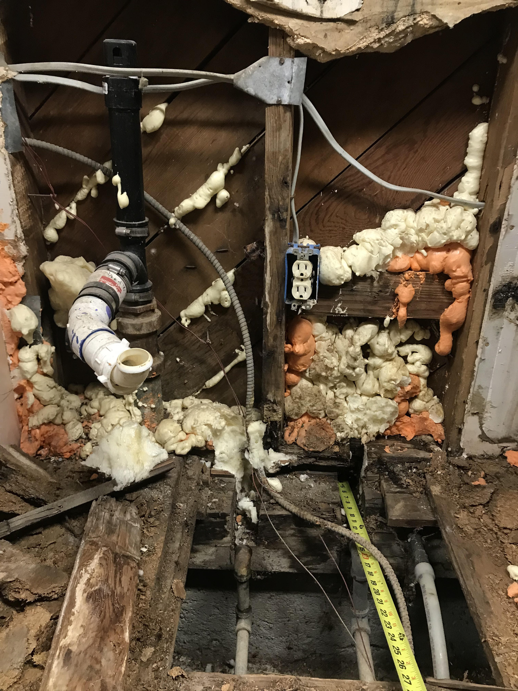
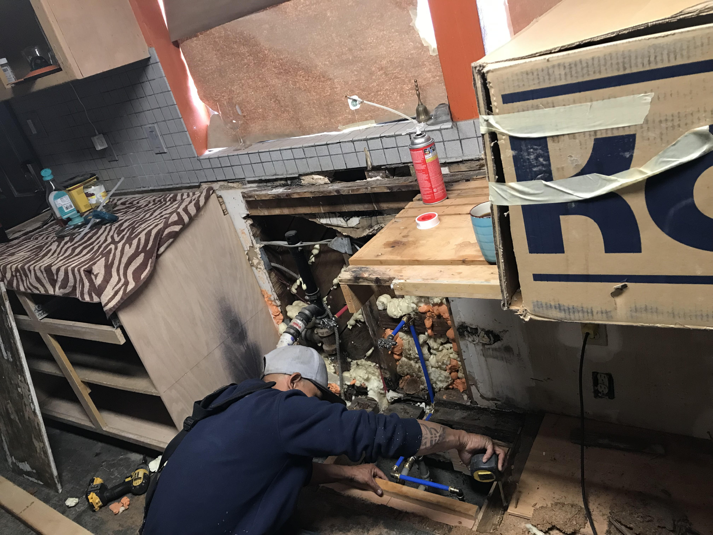

Welcome
Cain's Custom Fabrication & Construction
Column 1
My name is Cain. If you need tile work, block walls, plumbing, rought framing, electrical work done im your guy.
No job too big or small .
Column 2
My construction began in about 2003 when I joined ROC( Regional Occupation School) located in Bakersfield on south Mt. Vernon adult vocational trade school school. I started making book shelfs for north high school. Right after that I got enough experience laying tile and got a contract with all the Wendys in Kern County to tile their restaurants. Since then I have learned a varierty of trades and no longer desire to work making generic contrcution but rather custom fabrications of all kinds.